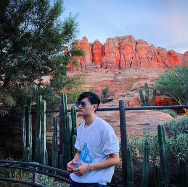

About Me
This is Ocean, (Ziyang Huang), a third-year student from the University of California, Davis, who is Currently majoring in design. I also plan to double major in communication, which is currently under the process of approval. I like music, films, and photographs, so I spend most of my free time on these three things. Talking about music, I like all types of music, especially alternative rock and classic pop music, and my favorite singer is Faye Wong. As for films, my favorite movie is “Coming Home”, directed by my favorite director Zhang Yimou and starring Chen Daoming and Gong Li, who are my favorite actor and actress as well. “Coming Home” is a Chinese historical drama film that depicts the story of two lovers in the 90s. I like photographs a lot, my friends and I usually travel to different places and take pictures like crazy during vacation. And I have been to France, England, Italy, Korea, Japan, Thailand, Canada and so on in recent years; and I took millions of pictures, which makes the best thing to do when I am traveling. I guess the interesting part about me is the English name that I have picked for myself, Ocean, which is pretty easy to remember. The reason that I picked this name is the last word of my Chinese name means ocean and also because I love the Ocean.